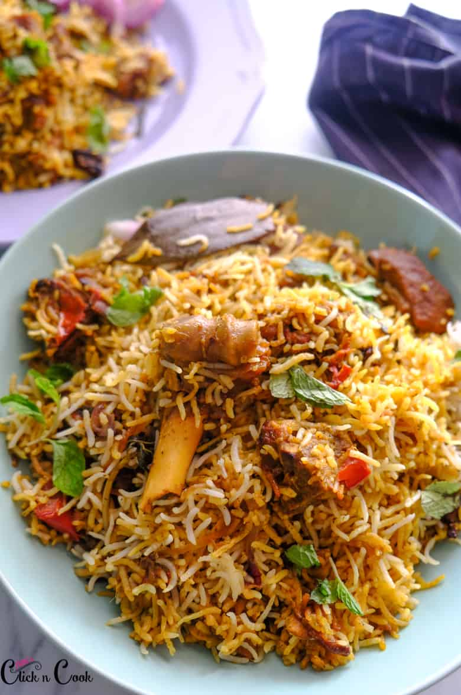

Biryani

Description
Biryani is the best rice meat dish in the world.
the marinated meat cooked over a slow flame accompanied with partially cooked basmati rice
Ingredients
- meat
- spices and herbs
- fried onions
- basmati rice
Steps
- marinate the meat with spices, herbs, fried onion and yoghurt
- cook the soaked basmati rice partially until it cooks 60%
- assemble the biryani in a thick bottomed vessel, marinated meat on the bottom and layering the partially cooked rice on top of it
- top it of with herbs and fried onions then close it up in a tight seal so no steam escapes
- cook for 40-45 mins on a low flame. then leave it to rest for 15 mins before serving:))))